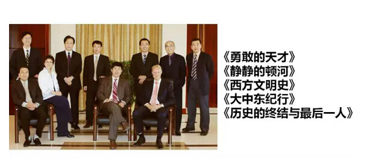

作者： 来源： 发布时间: 2015-12-18 10:42:42 浏览:2443 字体大小：
大号
中号
小号
2015年11月21日，禾丰牧业董事长金卫东在2015年第四届中国农牧营销年会上发表演讲
尊敬的高铁生会长，尊敬的农牧行业各位同行，尊敬的辅音国际董事长赵明先生：
大家早上好！
在分享第一张PPT之前请允许我讲几句话。今天大家汇聚一堂，来到了上海唐朝大酒店。唐朝是中国历史上最强盛的王朝，当然也是最富有的，所以唐朝才是中国人的梦想高度。如今，中国又一次回到了世界的顶级排名，经济走向第一、第二位次。今天，这么多的在农牧行业打拼的人坐到了一起，我油然地产生一种“乱云飞渡”恍惚的感觉。坐在我边上的天邦张邦辉总裁，我们就是上个世纪八十年代同期的大学生，同期的硕士生，今天一起来讲课，我们的企业在相近的年代上市。再隔一位的正大康地总裁吴龙先生，是我们辽宁当年最年轻的省饲料公司总经理，是中国第一部《饲料与饲养汉英词典》的主编，请吴龙先生起身给大家认识一下。这样一位大器早成的青年才子，英文那么好，在我们饲料行业做起了职业经理人，现在又回到我的老东家——正大康地担任总裁，有你在那里我就更放心了！
现在开始今天的报告，这个报告是赵明先生给我的命题作文。提起赵明，我不得不多说几句，我们是二十几年前，在外资企业打工时的好朋友。1991年，我到深圳正大康地的时候，赵明已经是老资格，他负责培训我们这些新入职的员工做畜牧养殖实习，然后我们就建立了友谊。后来，劳燕分飞，我到了北方，他继续在外企，先后在几家公司做高级管理者。我有志于实业兴邦，在北方建立了禾丰；他有志于普天之下都能听到他的教诲，所以他就开始做农牧行业的咨询管理。这些年，无论在营销领域，还是在管理方面，他和他的企业对于提升中国农牧行业的整体水平起到了重大的作用。在他的客户名单中，上有赫赫有名的新希望六和、最早上市的通威，下有一些成长型企业。赵老师风餐露宿，昼夜兼程。如今，他的企业辅音国际的发展达到了很高的高度，而他更好的高度是体现在他所服务和指导的中国农牧行业发展上。
说到“乱云飞渡”，我用这张裸女油画来阐述。这张油画的女主人公是个了不起的女性，她从小就跟妈妈一起背井离乡，16岁第一次嫁人，21岁第二次嫁人，两次婚姻每次只维持2个月，第三次，她嫁给了伟大领袖毛泽东，23岁。这幅油画中的女性就是江青。
江青18岁就成为中国左翼作家联盟（以下简称“左联”）正式成员。在上海，左联成员都是思想先进而又才华横溢的作家，包括鲁迅、田汉、丁玲、胡也频、萧红等，江青名列其中，当然不是浪得虚名。江青又是其中最执着勇敢的人，在日寇入侵的时候，那些左翼作家大部分去了重庆，去了陪都，江青和少数人去了红色首都延安，那一年，她22岁。次年，1938年11月，她和毛泽东主席结为夫妻。1991年，江青在她76岁的时候，从容地结束了自己的生命，所以我觉得江青就是一个乱云飞渡、处乱不惊的人。
江青除了这三次婚姻，还有几次短暂的爱情，其中最著名的一个同居者就是俞启威，俞启威别名黄敬，建国以后担任天津市市长，是个大才子，那时在青岛大学，俞启威是一个才华横溢的革命青年，介绍江青入党，江青在青岛大学边读书边做图书管理员，青岛大学现在就是中国海洋大学，当我去海洋大学招生的时候，海洋大学老师很骄傲地告诉我，北大出了一个图书管理员，就是毛泽东，管天下；我们学校出了个图书管理员，管毛泽东，就是江青。
这幅画是中国第一位画裸体模特的油画大师刘海粟的作品（关于刘海粟有一个专题片叫《沧海一粟》）。画中，年轻的江青健康、美丽，后来，她权倾朝野，不可一世，才貌尽失。一个当年那么积极向上的、思想先进的、追求人类自由和解放的知识女性，在社会环境的影响之下，在权利和个人欲望的双重驱使之下，遗憾地逐渐蜕变。
今天的我们，人生有得有失，事业有进有退，际遇有顺有逆，大家也不由自主地纷纷由当年的一个思想单纯的人变成了一个意志成熟的人，也有的蜕变成一个满身铜臭的人，也有的变成了一个投机取巧的人，也有的变成一个见风使舵的人。
江青在建国初期并不参政，也曾对主席有很多帮助。她写得一手好字，是一个可以完全模仿毛泽东书法的人。江青也是一个好的摄影家，我见过一幅江青拍的林彪在水中射击的照片，照得非常传神。接下来这张照片是江青的一幅成名之作，是在庐山仙人洞照的一张照片，照的是暮色苍茫的庐山，毛泽东还专门为这张照片题写了一首诗：
暮色苍茫看劲松，
乱云飞渡仍从容。
天生一个仙人洞，
无限风光在险峰。
文化大革命的时候到处都是毛主席的诗词，很多农村的家门对联就是“春风杨柳万千条，六亿神州尽舜尧”。有一家新婚，请中学校长写对联，中学校长提笔就写“天生一个仙人洞，无限风光在险峰”，引起人们一片赞赏。
我们处在一个什么时代呢？如果跟江青所处的时代比，跟很多电视、电影、书籍里看到的时代比，其实我们这个时代没有发生过大革命，没有发生过社会大动荡，没有过大灾难，没有过大饥荒，甚至也没有产生像工业革命那样的大飞跃、大变革、大跨越。因此，我们每天都在说要变革，每天说在转型，每天说要二次创业，有时候我感到非常幼稚。在禾丰，我从来没说过二次创业，哪天不是创业呢？哪天不是在改变呢？哪天不是在应情况的变化而做出自己的变化呢？所以我觉得，有些人好像有点无病呻吟。但是我们不得不说，我们的确生活在一个高速变化的环境中，变化之快有时甚至让我们都感觉不到它的变化。
回想一下这二三十年变化的就太多了。中国改革开放有一个阶层叫“92派”，就是1992年下海到外资打工的或者下海创业的主体。我是1991年到了外企，应该是领先于“92派”。1992年，我在外企当经理，当时我就不能理解一件事情，那就是每个经理都给一个Email。我不知道你们是怎么接受的这个E-mail，我是硕士毕业生，我当时就理解不了E-mail，怎么就能接到大洋彼岸的信息。为了这个，我们的外国经理给我讲了好长好长时间，我还是没有理解。那时，网速特别慢，我们要通过香港的服务器上网，相当于一种局域网，可是当时我都理解不了。禾丰创立后的1996年，我爱人在美国，那时候打电话一分钟要30块钱电话费，打不起，省钱的办法就是传真，传真如果写满一页的信纸，传过去一分钟也30块钱，要不然就得讲5分钟，这就省了五分之四。可后来用E-mail，大概几分钱就能传100页，从3000块钱到几乎免费，几年的时间，真的是发生了巨大的变化。如果从通讯成本数值来算，这是千千万万倍的变化。
改革开放30年，我自己创业20年，不仅是行业变化，我们的天下变化太多了。苏联解体了，中国从一个非常贫穷落后的国家真的变成了一个世界上强大的国家。1997年，我在公司内部做了一个培训，专门比较了中国和美国的经济差异。1997年，中国前500名企业销售总额比不上美国500强企业的第一名通用公司一家，大家能相信吗？今天，世界500强的前五名，有三名是中国企业。
再看看我们的行业，20多年前春节联欢晚会，给大家留下最深刻印象的就是赵本山的小品——《乡长吃鸡不给钱》，经过我们畜牧养殖业，饲料工业大家齐心努力的奋斗，今天大家已经可以随意吃肉，甚至把吃肉妖魔化了，现在谁再想请乡长去养鸡场吃一只鸡，那个乡长会给我们面子去吃吗？中国人已经吃足够多的肉、蛋、奶。中国现在虽然是世界第二大经济体，但在人均收入水平上，还是排在世界80多名的水平，可是中国吃肉年人均到60公斤了，蛋21公斤，奶30公斤，中国人均吃肉、蛋、奶的数量，是世界前十名的水平了。是谁让中国人吃到了这么多肉蛋奶？是我们这个行业！饲料工业是肉、蛋、奶的基础。饲料工业谁投资？饲料工业完全市场化，国家几乎没投钱。除了少数的大国企和最初的一些作为粮食局的附属企业的饲料公司，星星点点地投了一点钱以外，整个饲料工业的崛起，成为世界第一大的饲料工业，是我们民营企业的功劳。在不需要国家花钱的情况下，实现了饲料工业和畜牧业肉、蛋、奶供给量的高速成长，让中国人吃到了足够的肉、蛋、奶。肉、蛋、奶是营养的基础，哪个国家和民族吃肉、蛋、奶多，那个国家或民族的奥运会冠军就多。所以，现在奥运会我们不是第一就是第二，几乎不出前三名。我在上大学的时候，1984年，中国第一次参加奥运会，回来以后，中国做了一个纪录片，叫《零的飞跃》，纪录片出来的第一个画面就是在碧蓝的天空之下，五星红旗飞扬，然后出来“零的突破”四个字，中国从参加奥运会一直到那一届，第一次得了金牌。大学时，我们每次看这个电影，每个人都会高兴得流泪。今天，中国不仅是国家富裕了，不仅是经济上、政治上和军事上强大了，我们的素养提高了，我们的姚明在NBA也可以打主力了，这里有我们的功劳！另一方面，动物性蛋白不仅是肌肉的基础，也是神经系统的基础，神经系统发达、大脑发达、思维速度、思维逻辑能力也提高，中国现在陆续有了多位诺贝尔奖获得者，今年我们还有了一个真正的本土出生的科学类诺贝尔奖获得者——屠呦呦。屠呦呦这次获奖，她要去参加2015年诺贝尔奖颁奖典礼，与她同时被邀请的中国科学家是陈启军教授，其实屠呦呦获奖的评委之一就是陈启军教授。陈启军现在是我的母校沈阳农业大学畜牧兽医学院的院长。1989年夏季，我们同一天在中国人民解放军兽医大学参加硕士答辩，我觉得特别开心，特别自豪。我们不仅有诺贝尔奖获得者，还有诺贝尔奖评委，启军这次去参加颁奖典礼，我们学校给我打电话说：“卫东，陈教授去参加颁奖典礼需要晚礼服，这个你得准备”，我说没问题。
天下变化真是太快了。过去离我们很远的事情今天离我们这么近。有些过去安贫乐道，本应搞科学研究的人，今天走了完全不同的仕途或商旅，成为贵为庙堂的大官和亿万富翁。即使是那些人生赢家，今天也都有很多困难、压力、苦恼。总而言之，我想大家不必惊慌失措。随波逐流，往往是没有前途的，谋定后动才能成功。乱云飞渡、处变不惊需要定力，需要勇气，当然也需要实力。面对当下的挑战，不会有一味灵丹妙药或者某一个人的讲话就能让大家醍醐灌顶、茅塞顿开，没有一个放之四海而皆准的秘方可以让大家一下子就能应付了这样的挑战，就能够解决了面临的所有压力和问题。在我们的行业中，也有很多企业曾经红极一时，却如昙花一现，迅速衰落；也有很多企业无论从老板的素质和公司的品味，被大家认为根本没有理由成功，但是他也曾经叱咤风云，攻城拔寨；也有企业几乎奄奄一息，到处没有竞争力，却在上市后一下子就得到那么多金钱而马上又变得非常的疯狂。但是我想，毕竟企业的经营不是百米冲刺，人生的长度不是马拉松的距离可以比拟。人生是一场漫长的竞赛，在这个漫长的竞赛中，我们总会遇到机遇，也常常碰到压力，凡是轻易成功的人，他们也往往很快衰落，只有那些顽强成长、厚积薄发的企业和组织，才能基业长青。
今天，我要用三个汉字来帮助我阐述“乱云飞渡、处变不惊”。
大家感觉行业乱，其实从科学的角度来讲，乱才是真理。熵的原理被爱因斯坦称为科学的最高原则。“熵”是什么？“熵”即热力学第二定律，是一个物理化学的概念，在不同的领域有不同的解释。什么是“熵”，熵就是指混乱程度，科学的最高原理告诉我们：一切事物，总是倾向于混乱程度最大，不喜欢有序，越有序“熵”越低，越无序“熵”越高，越无序越健康，越无序越稳定，没有开发的自然山川就是“熵”最高的，青山绿水、幸福怡人，那么我们要让它有序了，要把石头中的铁提出来，把石头中的金提出来，把石头中的铜提出来，有序了以后环境就被破坏了。我曾经参加了一个关于环境保护的讨论，我听了一个科学家的阐述非常受启发。他说，我们讲环境破坏、环境污染，其实环境是不能被污染的。在我们这个星球上，有多少碳就是多少碳，有多少铁就是多少铁，有多少钙就是多少钙，几乎一点不增、一点不减，即使能量从太阳向下进行辐射提供额外的能量，地球也向外放射，几乎平衡，其他的所有物质造成污染，几乎都是这个星球上本来就有的，不增不减。我们是个封闭的体系，为什么有环境污染呢？只是秩序乱了，秩序乱了是自然界的混乱吗？不是，是自然变得更有序了，越有序就越污染，当你把需用的东西提取出来的时候剩下的东西就破坏了环境。所以，这就是“熵”。
从这个角度来说，我们行业也必然面临着这样的情况，所有的大企业按着这个原理都必然遇到更多的挑战。大企业要变小，小企业更容易变大；强盛的企业要衰落，弱小的企业就有机会变强变大，这是不可抗拒的，所以哪个企业最终都不会无限地发展。如果大的组织能无限发展，这个世界早已经变成单一的国家，单一的企业了。我们每个企业的生存都由这个最高的科技原则决定，我们一定有生存的机会，最强大的组织将面临最强大的压力，因为强大是有序，强大是要衰弱的。尼采说过：每个人的存在都是对别人的一种伤害。那些强者的存在其实也是对弱者的伤害。赵明老师做的工作为什么得人心呢？就是老是帮助弱者战胜强者，老是帮助需要帮助的人变得强大，总而言之我们要在一种共生的规则下来共同生存。
我是中央统战部重点联络的党外民主人士。每年参政议政发言的都有一个专题，前年我们组的专题就是节能减排。我一看小组7个发言人的观点是一致的，7个人都认为应该节能减排，我们的温室气体效应太突出了，二氧化碳太多了，长此以往，中国就完了，世界就完了。而我的观点和他们不一样，我的发言题目叫“节能减排之异见”，当我讲完之后下来一个领导把我抱住说：“卫东你讲的对，你单独写一个材料我给你送到国务院去给领导看看”。
我的观点就是：不必要节能，我们要提高生产效率。如果中国想生产世界最多的钢，我们就必然用最多的矿石，我们就必然消耗最多的能量，节能没有意义，在生产同类产品情况下，能量效率最有意义。中国要想变成世界的工厂，中国就应该最会使用原料，最会使用资源，最会使用能源，只要做到了这一点，何必节能呢？全世界的能量都给中国用才好呢，有朝一日，我们非常发达了，我们也不再生产了，让这类生产再转到另外的国家。今天我们还需要发展的时候，我们就有效地利用能源，节能不是迫在眉睫。第二关于减排，如果消耗能量了就必然会排出来，能量是守恒的，物质是不灭的，能量总是从一个状态向另一个状态转换，热力学的第一定律就是能量守恒和转化定律，各种“能”相互转换。我们把煤、石油烧了，能源就枯竭了吗？不会枯竭，烧完了就变成二氧化碳了，植物的生长不就是二氧化碳和水，在太阳的照射下通过光合作用，变成碳水化合物也就是糖啊！我们中国粮食12年来年年提高产量，我自己认为不一定是农业专家育种做得好，不一定是农业科研和生产做得好，就是中国污染越来越严重了，污染严重了二氧化碳就越多啊，二氧化碳多粮食产量能不高吗？粮食生产的基础是光合作用啊。朝鲜劳动人民再勤奋，粮食产量也不高，因为那里没有空气污染！二氧化碳与水合成碳水化合物，碳水化合物也就是糖，糖对于生命代谢多重要啊，糖提供能量的效率最高，给糖提供了氨基糖也能转化合成蛋白质，糖能转化合成脂肪，脂肪变成糖当然也容易，神经系统供能主要靠糖，科学家就是神经系统耗能多的人，尤其应该多吃碳水化合物为主的谷类，我看到老朋友潘军博士就在现场，你是营养专家是不是同意我的观点啊？
行业现在混乱，混乱才是常态。能量会自动地从高能量向低能量转换，自动从温度高的物体向温度低的物体传递，所以小企业不怕接触大企业，越接触越获得能量。
经营企业希望成功，愿意多赚钱。大家抱着什么心态参加各种培训？我敢说大多数抱着低俗心态就是想赚钱的心态，导致很多成功学大行其道，很多的咨询公司都有很大的市场，像辅音这样阳春白雪的公司并不多见。赚钱的“赚”，一边是一个代表金钱的“贝”，另一边是一个兼顾的“兼”，对金钱的态度决定了企业的发展方式，最后造成了企业品格的不一样。有一门学问叫训古，考证每个字的本意，比如考证“姑息养奸”的意义，“姑”就是年龄大的女人，“媳”就是年龄小的女人，“姑息养奸”就是说不管年龄大的女人还是年龄小的女人都太有同情心了，都容易没有原则地迁就和原谅。我用训诂学的知识解释一下“赚”， “贝”就是金钱。为什么有很多贪官，是因为他们太看重眼前利益、看重今天的钱就是“贪”；还有很多人没有长久的想法，有钱就消费有钱就花光，愿意分钱，这就是“贫”；有的人为了钱，二人操戈这就是“贱”；有的人为了钱不仅用兵器明抢，还揣着匕首暗器，这就是“贼”。在对钱的态度上我们饲料企业是不是也有各种各样的心态？有的企业为什么做不大，因为他们挣了钱就分了，有的国有企业或者是大小股东观点不一致的，这种企业往往是科技型企业，在北京这种企业较多，他们挣钱很容易但是不太积累，很快就又分掉了；也有很多企业贪得无厌不择手段，不惜违背公德，不惜危害别人健康；也有企业巧取豪夺，不择一切手段挖人才，偷技术。那么真正的对于财富好的态度是什么？是另外一个汉字“贵”，要用中正公平的态度来对待财富，把钱放在原则之下，那么就会成为一个受人敬佩的贵人。我知道我们今天有福建来的领导和客人，有一本书叫《中的精神》，这本书记载的是福建人棋圣吴清源的故事，客居东瀛的他曾经打败日本棋界所有高手，是因为有中的精神。
我把此字分拆解释。
“亡”——生于忧患，死于荒淫；
“口”——传道授业，出言必信；
“月”——白驹过隙，惜时如金；
“贝”——养义生利，日累月进；
“凡”——本色如一，不忘初心。
为了押韵，我把“生于忧患，死于安乐”改成“生于忧患，死于荒淫”。今天在场的陆政，是我的好朋友就挑战我，说还是改成“生于忧患、死于安乐”好一点，忠实原文。我说陆政啊，因为你们这些商人都荒淫无度，为了提醒你们，我才用心良苦改成死于荒淫的。
最后一句叫“本色如一，不忘初心”，要做到这点是非常之难的。我不能说我已经做到，不能说禾丰已经做到，但是我想我本人已经在努力做到，禾丰相对而言做的较好。2001年，禾丰要从一个东北公司变成一个全国公司，第一站就是到北京创业，与中国著名的大农业集团（国企）三元集团合作，我们得到机会相当不易，我们没有失败的退路。那时，禾丰刚刚在东北做起来就要出去扩张，内部意见还不一致，如果第一步扩张失败，我们就永远不能再扩张，另外北京地处首都，人才资源多，信息发达，好事不出门，坏事传千里，在北京失败，我们也没有脸再出去。思来想去最困难的工作，最重的担子我愿意来挑，于是在2001年，那时候禾丰每年净利润也应该在几千万了，既然要扩张我就打先锋，我决定不再做集团的总裁了，去做北京分公司的总经理，我带领9个人，开车去北京创业，就是现在的“北京三元禾丰”。天道酬勤。十年后，我们挣回来15倍的投资，现在三元禾丰每年的利润是当年总投资的5倍左右，三元禾丰在三元集团每年总结会上必是常讲的榜样。当时，我离开集团总裁做分公司经理，大家送我们到东北平原与华北平原交界的“山海关”告别，我与伙伴们分别之际嘱咐大家10句话：
勿忘创业艰辛，勿忘情深意长，
勿忘危机四伏，勿忘志存高远，
勿忘以人为本，勿忘广结善缘，
勿忘遵纪守法，勿忘克勤克俭，
勿忘慎言敏行，勿忘天下为公。
这是民营企业股东伙伴之间的临别寄语，其间充满了浩然正气，真挚情谊，我们的党中央领导如果知道了中国民营企业持这样志存高远的敬业态度，执这样遵纪守法的自律精神，有这样天下为公的家国情怀应该是多么高兴啊！而事实上这就是十四年前禾丰的真实故事。所以我说禾丰在本色如一，勿忘初心方面做的非常好。
在这个“乱云飞渡”的时期，大家还是要坚守那些商业的基本原则：产品是企业的第一竞争力，产品的质量是不会超过原料的品质的，要用好原料，要在国家法律允许，要在对人类健康有益的范围内，做好自己的饲料配方，设计好自己的饲料产品；在同一规则下参与竞争；要提高公司的效率；要7个人做其他公司10个人的工作，7个人开10个人的工资，提高员工的福利待遇水平，同时也不增加公司的负担；我们要相信知识的力量，“知识就是力量”这是一句伟大的格言，要相信“道”不要太迷恋“术”，得到“术”是容易的，而真正的学知识是难的。一个非常好听的课，往往不是最有价值的；一个非常枯燥的不愿意学的课程，甚至给你带来心理负担的课程，其实对你才是最有益的。要想真正做到“处乱不惊”，就要真正做到心中有百万雄兵，这百万雄兵就是知识，你的知识就是你的力量！
与大家分享亚伯拉罕•林肯总统的一段话：
I am not bound to win,
but I am bound to be true.
I am not bound to succeed,
but I am bound to live up to the light I have.
I must stand with anybody that stands right stand with him while he is right and part with him when he goes wrong.
(Abraham Lincoln, 16th US president)
这是香港《明报》的翻译：
我不求必胜，
但矢志真诚。
我不一定求成功，
但定必言行如一，贯彻始终。
我必将与正人君子并肩，
是其所是，非其所非。
如果大家认为翻译得很好请鼓掌，好！谢谢大家的掌声，不过大家不应该鼓掌，明报翻译的并不很好，其实后半段翻译有错误。科学的基本态度是怀疑，以怀疑的态度审视现实，科学的基本方法是批判，以批判的方法对待权威，下面是我的翻译：
我不求必赢，
但矢志真诚。
我不惟成功，
但矢志光明。
我必与正念之人并肩，
其正则是，其非则反。
这样才符合信达雅的翻译原则，如果大家认可请给我鼓掌，谢谢。
我挺惭愧2014年被聘为我的母校沈阳农业大学的博士导师，不是别人当博导我挂名，而是这个学科博士导师去世以后空位，如果没有新的博士导师，这个学位授予权就成问题了，我接班的是我最尊敬的老师，中国第一位畜牧经济学博士导师李明哲教授。李教授当年对我有知遇之恩，我读研究生的时候选他的课，半年对话式的课程结束的时候，他拉着我的手说：“金卫东，我在你身上看到了中国的希望”。李老师去世多年了，我们既是师生也是忘年之交，接续李老师担任博导我受之有愧，也倍感荣幸。
今年，我开始带博士生。前天布置他读5本书，我也把这5本书推荐给大家：
第一本《勇敢的天才》。讲的是两个诺贝尔奖获得者，法国青年加缪和雅克•莫诺的故事，他们当年就是吊儿郎当的青年，一个老想混进政府当公务员，一个长期不能正常博士毕业。二次大战爆发，法国被纳粹德国占领，他们一下子变成熟了，两人自动加入到地下抵抗行动，甚至加入了共产党，成为坚定的革命者，法国光复以后，加缪从一个虚无主义者变成了一个批判现实主义者，主动地把自己的文学创作和人民的幸福自由和权利结合在一起，他40多岁就获得了诺贝尔文学奖。而雅克•莫诺进入了巴斯德研究所，研究细菌对营养的适应性的突变，在几年以后，他也获得了诺贝尔医学和生理学奖。这两个人为了国家的独立自由，不惜冒着枪林弹雨牺牲的危险，更为特殊的是，雅克•莫诺因为是个共产党员，他是左派，当后来在苏联的主导下科学界一致向左，否定摩根，否定孟德尔遗传学，主张米丘林学说的时候，他不惜退出组织，坚持自己的科学主张，最后他获得了诺贝尔医学和生理学奖，而那个时候，沃森（就是双螺旋结构发现者）还没有获奖，人类还不知道DNA的双螺旋结构，他的获奖有赖于他自身很高的逻辑推断能力，他是在一个不完全的科学研究基础上，用强大的逻辑推断能力而获奖，更绝的是，这个小说的作者西恩•雅罗尔，是美国的一个大教授生物学家。
第二本《静静的顿河》我曾经在朋友圈里推荐，理由大概是5条。第一条就是长，如果你只能看短篇不行，得看长篇，作家肖洛霍夫，一生大概就这一部作品，所以别人怀疑他本身是个赝品，是抄袭别人的，但是写得荡气回肠，写的是大革命前夕的俄罗斯的基层民众中的一个特殊群体——哥萨克，讲欧亚文明的冲突，讲新的革命与旧的思想的冲突，讲无情的屠杀和有情有义的爱情。这本书可能你学生时期读过，但是那个时候不能完全理解，今天再重读会觉得非常好。
第三本《西方文明史》，我推荐斯皮瓦格尔的版本。即使我推荐给大家，大家几乎都不能读，即使能读也不能读完，因为这是一本特别复杂的书，它从史前文明一直写到911事件，写的高级好，但是几乎没有人能把它从头到尾读完，我也正在读的过程中，上下两册，上册我已经读完了。
第四本《大中东行纪》，这是一个香港城市大学校长张信刚写的，作者本身是一个学生命科学的博士生导师，《大中东行纪》读完了，你就会懂得什么是中东，什么是穆斯林，哪些人是阿拉伯人，决定阿拉伯人命运的是哪几个民族。
最后一本《历史的终结与最后一人》，这是一个叫弗朗西斯•福山的日裔的美国思想家写的，他认为在苏联解体以后，人类的历史进程已经终结了，不需要再前进了，就是民主资本主义制度，历史就完结了，不需要再讨论，所以这本书叫《历史的终结与最后一人》。如果你要读这本书，前面还有一本书叫《文明的冲突》，就是他的老师，萨缪尔•亨廷顿写的，这本书写完以后当时就引起轰动，而在“911事件”以后更是洛阳纸贵，中国就连续多次出版，他判定世界未来的冲突是文明的冲突，特别是伊斯兰文明和西方文明的冲突。他还有一个主观的论断，他认为虽然世界上有7、8个主要的文明，但是也可以归结为就2个文明，就是西方的文明和非西方的文明，你如果读了那本书再读这个就更好，我上次在这里做报告的时候曾经推荐弗朗西斯•福山的另一本书叫《信任》，也非常值得一读。
我今天的报告基本守时，谢谢大家。
（本文根据禾丰牧业董事长金卫东在2015年第四届中国农牧营销年会上的演讲录音整理。）